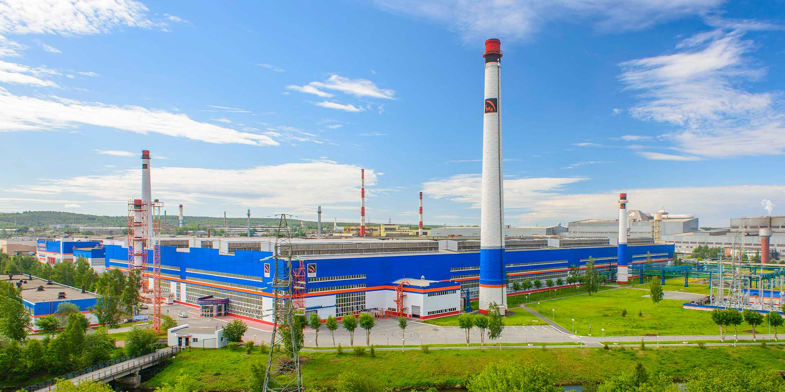

Статья из журнала "Современное предприятие"
Что такое предприятие
Предприятие производит товары и услуги
В экономике любой страны должны присутствовать такие экономические субъекты. которые удовлетворяли бы потребности в благах. Таковыми являются предприятия, производящие блага для других участников экономической жизни - домашних хозяйств, государства, но и, конечено, для других предприятий, которые нуждаются в промежуточных продуктах для своего производства, например дерева для производства мебели, листовой стали для производства автомобилей. В качестве блага может выступать материальный продукт, например автомобиль, холодильник, или услуга, например стрижка волос или массаж в салоне красоты. Материальные продукты и услуги, предлагаемые для продажи, называют товаром.
Предприятию необходимы факторы производства
Чтобы произвводить продукты и услуги, предприятию нужно приобрести сырье, материалы, оборудование, нанять работников, которые будут выполнять различные задачи. Часть необходимых факторов производства предприятие может закупать, например сырье и материалы, а часть арендовать, например производственные или складские помещения.
Придприятие предлагает свои товары на рынке
Производимые товары предприятиею необходимо продать потребителям и попытаться получить такую выручку, которая будет превышать все затраты, которые возникли при производстве и продаже этих товаров. С этой целью предприятие становится участником рынка, где встречаются спрос потребителей и предложение предприятий. Деятельность на рынке, для которого производится товар, требует от предприятия значительных усилий и немалых затрат.
У предприятия есть собственник
Идея создания предприятия обычно возникает у отдельного человека или группы людей. Для реализации предпринимательской идеи нужно не только продумать множество вопросов будущей деятельности предприятия, но и приобрести все необходимые ресурсы. Нужно построить или взять в аренду здания, приобрести оборудование, закупить сырье и материалы. А для этого нужен первоначальный капитал. Это могуть быть деньги - свои или взятые в кредит в банке. Стартовым капиталом могут быть материальные и нематериальные ресурсы, например построенное здание, научное открытие. Все, кто вносит стартовый, становятся собственниками предприятия. Их собственность увеличивается по мере того, как предприятие получает прибыль. Прибыль распределяется между собственниками в сответствии с установленными правилами. Часть прибыли может оставаться в распоряжении предприятия и использоваться, например, на покупку более современного оборудования. Чтобы успешно осуществлять свою деятельность в долгосрочной перспективе, предприятию нужно развиваться, т.е. вкладывать деньги в свое развитие.
Предприятие является источником дохода
С какой целью создаются предприятия? Основным мотивом создания предприятия является получение прибыли. Прибыль - это основной доход собственников предприятия. В отличие от собственников, наемные работники получают доходы в виде зароботной платы.Предприятие является источником дохода и для государства, которому оно платит налоги. Доходы в виде процентов получают и все те, кто предоставляет в распоряжение предприятия капитал - например, банки, которые обеспечивают его кредитами.
| Предпритие производит товары и услуги | ||
| Предприятию необходимы факторы производства | ||
| Предприятие предлогает свои товары на рынке | ||
| У предприятия есть собственник | ||
| Предприятие является источником дохода |